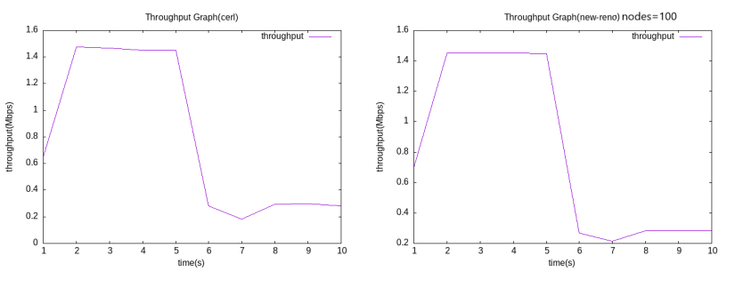

TCP CERL: congestion control enhancement over wireless networks
At A Galance
- Studied the TCP-CERL technique for enhancement of congestion control which is the sender-side modi- fication of TCP-Reno.
- Implemented this technique in NS3. The implementation that the authors of the paper did was in NS2.
- Tested on two wireless networks: Wi-Fi and LR-WPAN.
- Calculated various performance metrics such as throughput, end-to-end delay time, delivery-ratio and loss-ratio.
Idea
TCP CERL is a sender-side modification of TCP Reno. The key idea behind CERL is to use the RTT measurements made throughout the duration of the connection to estimate the queue length of the bottleneck router and then estimates the congestion status. By distinguishing random losses from congestion losses based on a dynamically set threshold value, TCP CERL successfully attacks the well-known performance degradation issue of TCP over channels subject to random losses.
Formulas
- Calculation of Bottleneck Queue Length:
- L = (RTT– BaseRTT) * Bandwidth
- Bandwidth = congestion window / RTT
-
Calculation of Dynamic Queue Length Threshold:
N = A * L_max ( A = constant)
Fast Recovery & Fast Retransmit
- 3 Dup Ack received
- Check L
- True → Random Loss
- False→Congestion Loss
- Implementation of separate losses according to TCP CERL
Retransmit Timeout
Same as TCP Reno
Simulation Tool
Network Simulator v3 (NS3)Netwroks
- Wireless high-rate (e.g., 802.11) (mobile) --- Wi-Fi
- Wireless low-rate (e.g., 802.15.4) (mobile) --- LR-WPAN
Network topologies under simulation
In this project, “Ad-hoc” topology is used. It is a wireless topology where devices are connected without using any additional network infrastructure devices like a wireless access point.
Image source: From paper on "Impact of Sybil Attack and Security Threat in Mobile Adhoc Network" by Ankit Gupta, S. Deepak, and Amrita Tiwari
Parameter under variation
- Number of nodes (e.g., 30, 60, 100)
- Speed of nodes (as both network needs mobility) (e.g., 5 m/s,15 m/s, 25 m/s)
Overview of TCP CERL algorithm
- Step-1: Calculating the bottleneck queue length(L)
- Step-2: Calculating the dynamic queue length threshold(N)
- Step-3: Each time a new RTT is received, values of T, L, L_max, N are updated.
- Step-4: Slow start and congestion avoidance is same as Reno.
- When 3 duplicate acknowledgements are received,
- If L < N, CERL will assume this segment loss is “random loss” rather than congestion loss. The lost segment will be retransmitted, but the congestion window and slow start threshold will not be reduced.
- Otherwise, CERL will assume the loss is caused by congestion, and the congestion window and slow start threshold will be reduced as in Reno. However, multiple segment losses in one window of data will only reduce the congestion window once.
- Step-5: Small modification in fast recovery algorithm code that handles window deflation.
Modifications made in the simulator
As ns-3.35 uses tcp-newreno as root of all tcp congestion algorithm,
tcp-cerl has been developed using tcp-newreno as basement.
- First of all, two new files – “tcp-cerl.h” and “tcp-cerl.cc” are added in the “/ns-3.35/src/internet/model” folder.
- Secondly, four new files – “wifi-tcp-reno.cc”, “wifi-tcp-cerl.cc”, “lrwpan-reno.cc” and “lrwpan-cerl.cc” are added in the “/ns- 3.35/scratch” folder.
- Thirdly, two new variables are added in the ‘TcpSocketState’ class in “/ns-3.35/src/internet/model/tcp-socket-state.h” file.
- Fourthly, a small modification has been done in the ‘TcpSocketBase::EnterRecovery()’ function in “/ns- 3.35/src/internet/model/tcp-socket-base.cc” file.
- Last of all, but most importantly, to build CERL 'model/tcp-cerl.cc' is added in the “def build(bid)” method in “/ns- 3.35/src/internet/wscript” file and “tcp-cerl.h” is added in “/ns- 3.35/build/ns3” folder. A variable is made public in "ns-3.35/src/internet/model/tcp-socket-base.h" file.
Results & Comparison with graphs
To compare TCP CERL with TCP NewReno, three performance metrics (throughput, end-to-end-delay & packet-delivery ratio) are measured varying two parameters (Number of nodes & speed of nodes). The comparison is showed below using graphs.
For Wireless high-rate (e.g., 802.11) (mobile) --- Wi-Fi
- Varying number of nodes:
- Number of nodes=30
- Number of nodes=60
- Number of nodes=100

- Varying speed of nodes:
- Speed of nodes=5 m/s
- Speed of nodes=15 m/s
- Speed of nodes=25 m/s

For Wireless low-rate (e.g., 802.15.4) (mobile) --- LR-WPAN
- Varying number of nodes:
- Number of nodes=30
- Number of nodes=60
- Number of nodes=100
- Varying speed of nodes:
- Speed of nodes=5 m/s
- Speed of nodes=15 m/s
- Speed of nodes=25 m/s

Explanation of results and Comparison with TCP-NewReno
For the Wi-Fi network, we can see that when number of nodes increases, CERL gives better throughput than NewReno. End-to-end delay slightly differs. But delivery-ratio is much better for CERL. When increasing speed of nodes, throughput & delivery-ratio becomes surprisingly higher than New-Reno, though it takes much time.
For the LR-WPAN network, it’s clear that when number of nodes increases, at first CERL gives better throughput than NewReno but gradually it becomes almost same. End-to-end delay slightly differs like in Wi-Fi. But delivery-ratio is same or sometimes better for CERL. When increasing speed of nodes, throughput & delivery-ratio becomes better than New-Reno, but not as much in previous Wi-Fi network. As expected from observation, CERL takes relatively far more time than NewReno.
Comparing results with Paper
In the paper, the researcher claims (at section 5 Conclusion, page-15) that TCP CERL is able to achieve excellent throughput gain than newreno. The results and observations, stated above, completely agree with their claim. Further, this project depicts that CERL gives far better performance in delivery-ratio also. But it’s true that CERL takes much time for transmitting packets.